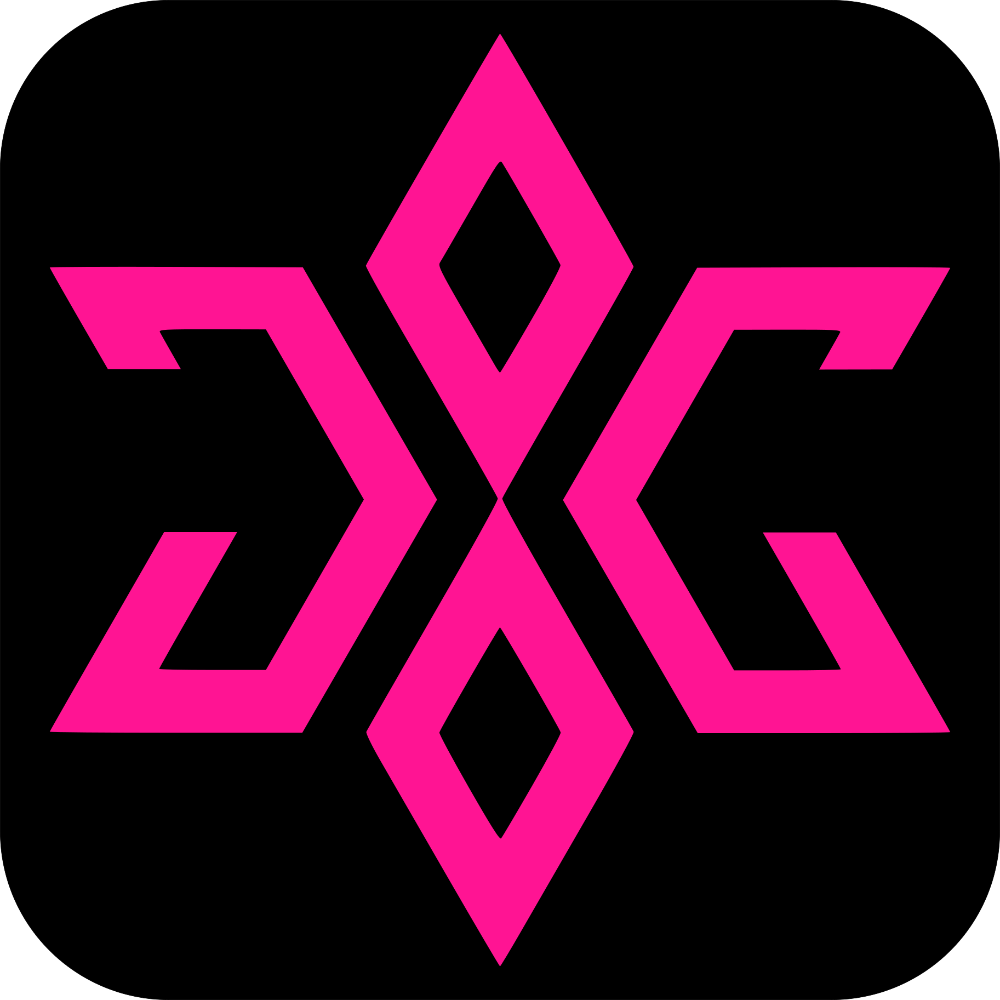

Cicle Formatiu de Grau Superior — Administració i Finances
Institut Obert de Catalunya · IES Santa Coloma de Farners

Judith GutiérrezApassionada · Autodidacta · Proactiva
Gestora digital, instructora de fitness i guia de BTT. Em fascina crear, dinamitzar i veure com les coses prenen forma.
Sóc una professional versàtil amb més de 20 anys d'experiència en el sector administratiu i digital, complementada amb formació en fitness i guiatge de BTT.
La meva trajectòria reflecteix una constant inquietud per aprendre i evolucionar. Em caracteritzo per ser resolutiva, organitzada i amb una gran capacitat d'adaptació. La meva experiència en diferents sectors m'ha donat una visió integral dels processos i una habilitat especial per optimitzar recursos i implementar millores.
L'energia i la motivació són el meu segell, i el somriure i la passió, la meva identitat. Tant en una reunió com en una classe o sobre la bici, always busco que cada experiència sigui única, autèntica i plena de força.
Institut Obert de Catalunya · IES Santa Coloma de Farners
Federació Catalana de Ciclisme · Escola Catalana de l'Esport · ROPEC 034811
European Sports and Health Institute (ESHI) · ROPEC
Si has arribat fins aquí, potser és per curiositat, o potser perquè alguna cosa en mi t'ha cridat l'atenció. Sigui com sigui, només hi ha una manera de saber si encaixem: trobant-nos i parlant.
Res de discursos preparats ni formalismes pesats. Només un cafè, una estona compartida, una conversa autèntica i, qui sab, potser una d'aquelles trobades en les què val la pena haver perdut una mica el temps.
Tu poses el lloc i l'hora, jo porto l'energia i el somriure. Prenem aquest cafè? 😉
Sí, prenem-lo →Ajuda'm a esquivar els obstacles del camí. Prem l'espai o clica la pantalla per saltar!
L'èxit és qüestió de trobar les persones adequades en el moment oportú. Potser aquest és el nostre moment? Provem-ho. 😉